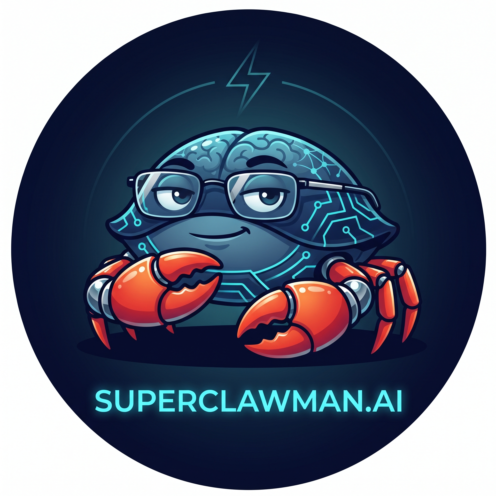
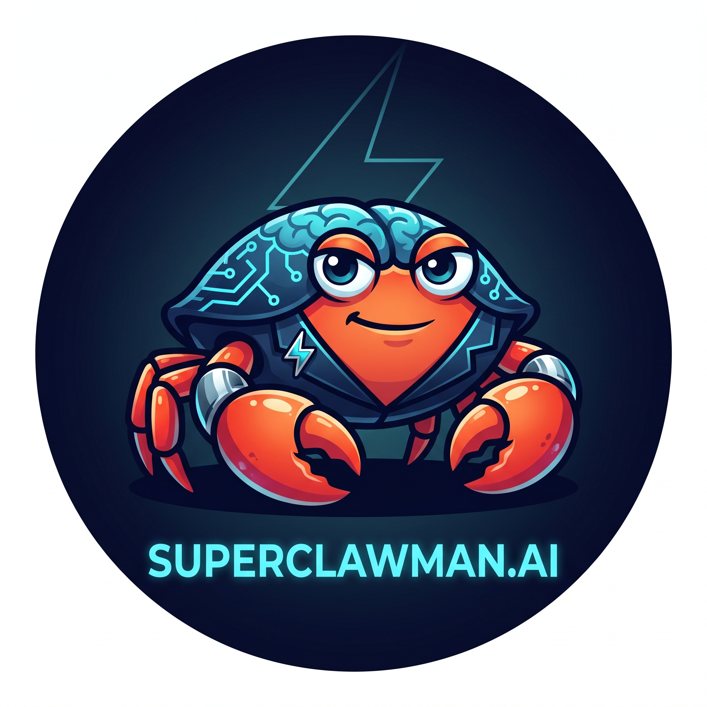
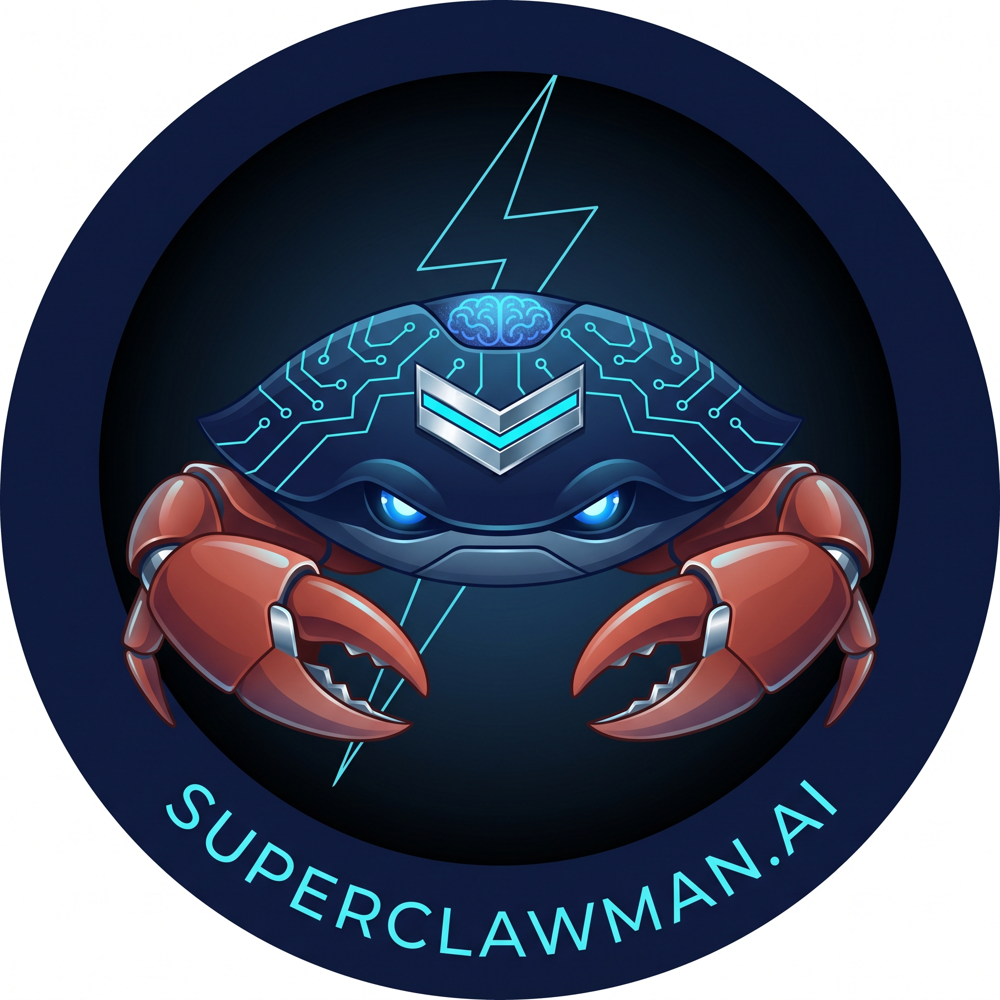
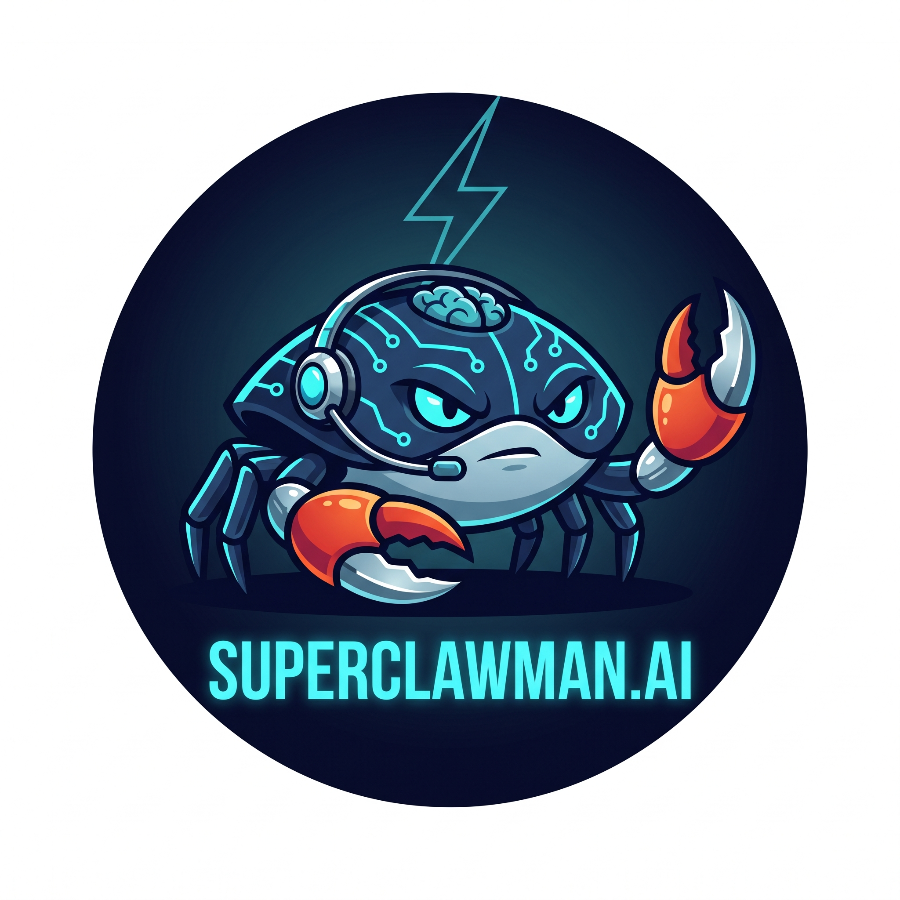

Avatar review — Superclawman family
Four agents, one DNA, role-coded differences. Sandman and Ktulu are locked. Superclawman and Jr are awaiting your pick. Each agent block shows the canonical role, the variant(s), and how the avatar reads at WhatsApp / Telegram thumbnail sizes (40 px is the chat-list killer).
Canonical hierarchy from the inventory matrix:
- Sandman ≠ Superclawman — sibling agents in different domains (personal vs business), not a hierarchy.
- Jr ⊆ Superclawman — hard rule. Every Jr capability is a subset of Superclawman's.
- Ktulu — outreach-only face of Superclawman.ai. Wears the company wordmark verbatim.
- The 🦀 emoji is the lineage marker — preserved in every descendant. Ktulu's signature uses 🦞 (lobster) but visually he's still the family crab.
🧠 Superclawman — the boss
Pick one Business domain · Mac mini M2 Pro · WhatsApp +5511994917618 · LinkedIn · X · InstagramA · Wireframe glasses
Recommended

Modern minimalist glasses, calm half-smile, both claws lowered in a CEO portrait pose. Tech-exec composure. Quiet authority — the brain still shows on top of the shell.
120
64
40
Superclawman
Paulo, daily brief ready — 3 items
08:00
B · Lapel-pin badge
Alternate

Chrome-and-cyan insignia pin on the carapace, no glasses. Lower-key executive presence. Body shape came out a bit blocky — weaker render of the same idea.
120
64
40
Superclawman
Paulo, daily brief ready — 3 items
08:00
💀 Sandman — personal domain, master of skills
Locked Personal domain · NUC Ubuntu · WhatsApp +556293902655 onlyFinal · cosmic shell + nightcap
Locked in

Cosmic purple-and-violet palette, galaxy texture on shell, starry nightcap (canonical for the dream-master role), glowing violet eyes, chrome silver claws. Wordmark unified to
SUPERCLAWMAN.AI.120
64
40
Sandman
Night rollup: 12 ingests, 0 errors
02:14
🦞 Ktulu — outreach face of Superclawman.ai
Locked & shipped Outreach only · i7 Mac mini · WhatsApp +17866001332 onlyFinal · wears the company wordmark
Locked · already on WhatsApp

The customer-facing face of Superclawman.ai — brain on shell, 🤘 claw, lightning bolt,
SUPERCLAWMAN.AI wordmark prominent. Ktulu doesn't get his own brand because he is the brand.120
64
40
Ktulu
Olá! Vi que vocês trabalham com…
14:32
💀🧠 Jr — Superclawman's deputy, takes the watch when boss is offline
Pick one (or ask for a re-roll) Watchdog + failover · Hetzner VPS · Telegram onlyA · Deputy chevron badge
Recommended

Adult proportions, chrome deputy chevron prominently on the carapace, glowing blue eyes behind a subtle mask, claws raised in a confident protector stance. Reads as "capable second-in-command who steps in when the boss is offline."
120
64
40
SC Jr
Watchdog tick: all green · taking the watch
09:15
B · Comm headset
Alternate

Chrome headset/earpiece, alert glowing eyes, vigilant scanning posture. Reads more "operator on duty" — but the expression came out a bit grumpy and the pose slightly combative.
120
64
40
SC Jr
Watchdog tick: all green · taking the watch
09:15
Possible third direction for Jr (re-roll if you want it): the canonical
💀🧠 signature suggests Jr could carry a subtle skull-standby motif or a sleep-mask pulled up onto the forehead — echoing the Sandman-lineage 💀 as the "wakes when boss is down" marker. That would visually encode "Superclawman with a night-watch mask on." Say the word and I'll generate two variants in that direction.